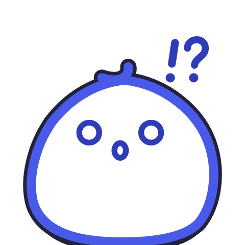

まちの はてなを
つかまえろ！
いつもの まちに、はてなが かくれてる。
かこんで つかまえて、よそうして、
ずかんに あつめよう。
せかいかん：あそびの ことば
さがす＝ 撮影
つかまえる＝ 囲む
せーの！＝ 予想を決める
しょうたい＝ 答え合わせ
もしも＝ 条件変更
はてなずかん＝ 図鑑
いろ
ナビ
さんすう
さんすう
ほめる
おだい
おだい
きみ
わくわく
わくわく
りか
うん！
うん！
じょう
ほう
ほう
ズレ
おしい
おしい
ピタリ
だけ
だけ
ナビの かお
あんない かくにん
かくにん しらべ中
しらべ中 ピタリ
ピタリおしい

大はずれもじ と かたち
720回
Mochiy Pop One：見出し・数字・ボタン
Zen Maru Gothic：文・ふりがな
Zen Maru Gothic：文・ふりがな
ボタン
押せるものだけ 太い線＋下のかげ。
入力欄は線だけ、押せないものは背景色だけ
22px以上の漢字には ふりがな。小さい文字は ひらがな。
入力欄は線だけ、押せないものは背景色だけ